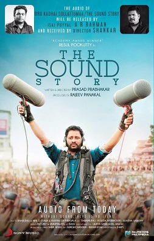

Despite being a Hindu festival, the Thrissur Pooram is attended
by different sections of Kerala society. Several replicas of
the festival are held in places in Kerala as well as outside
the state
Thrissur Pooram is considered one of the greatest gatherings in
Asia. It has an important place in the tourism map of India, as
tourists enjoy the beauty and traditions of this pooram. Rail and
bus connectivity is excellent in Thrissur, which attracts many
foreign tourists to the gala. It is considered as meeting of Devas
(ദേവ സംഗമം).

Sound Story
The Oscar-winning sound editor Resul Pookutty and his team recorded
the sounds of the 36-hour festivities and made a movie The Sound
Story.